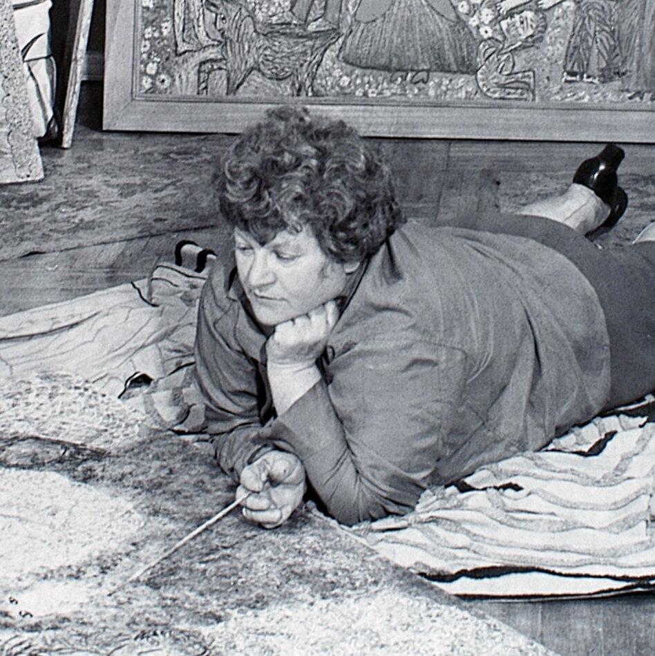

Janet Sobel (May 31, 1893 - November 11, 1968), born Jennie Olechovsky (occ. Lechovsky), was a Ukrainian-born American Abstract Expressionist painter whose career started mid-life, at age forty-five in 1938. Sobel pioneered the drip painting technique that directly influenced Jackson Pollock. She was credited as exhibiting the first instance of all-over painting.
Photo of Janet Sobel, 1944
